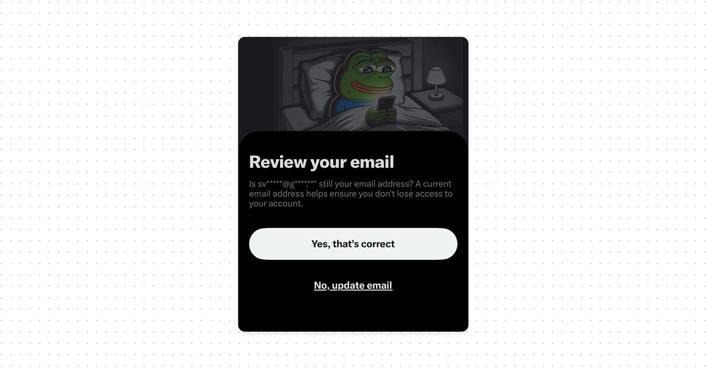
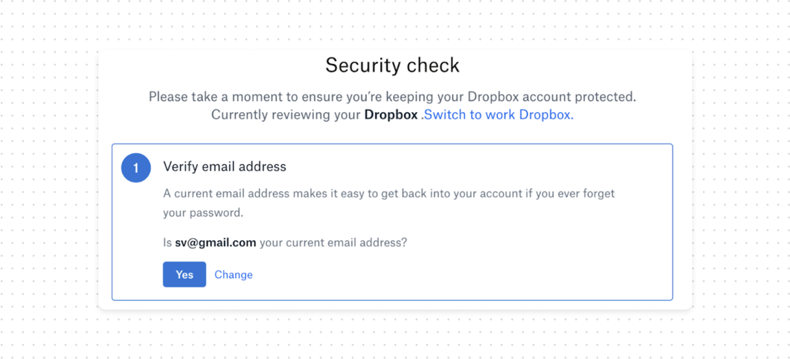
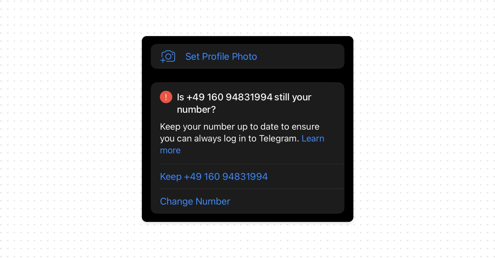

Why every product needs a recovery check

Most products ask for an email address or phone number when you create an account. You stay logged in on your phone for years. You don’t think about your password, recovery email, or phone number because you don’t need them.
At some point you get logged out, forget your password, or need to verify your identity. Suddenly, the only recovery option is an old email address or phone number you no longer have access to. People’s contact details change, and products don’t always know when they do.
Because of this products should periodically verify that recovery channels are still controlled by the user. This can be as simple as asking the user to confirm an email address or phone number.
What good UX looks like
- Check in periodically. Ask users to confirm their email, phone number, and other recovery methods while they’re still logged in.
- Explain why it matters. A short message about account recovery or security alerts is enough to make the check feel useful, not random.
- Make updating easy. If something changed, let users update it immediately instead of sending them to account settings.
- Protect recovery changes. Require additional verification when users change recovery methods and notify the old channel about the change.



Bottom line
Products should periodically check that recovery methods are still relevant. Don’t wait for the user to lose access before discovering that their recovery information is already outdated.
A good approach is to re-verify recovery details each 3 months while the user still has an authenticated session. Changes to recovery methods should also require additional verification and trigger security notifications, because an attacker who gains access to an active session may try to replace the recovery channels and lock the real owner out.